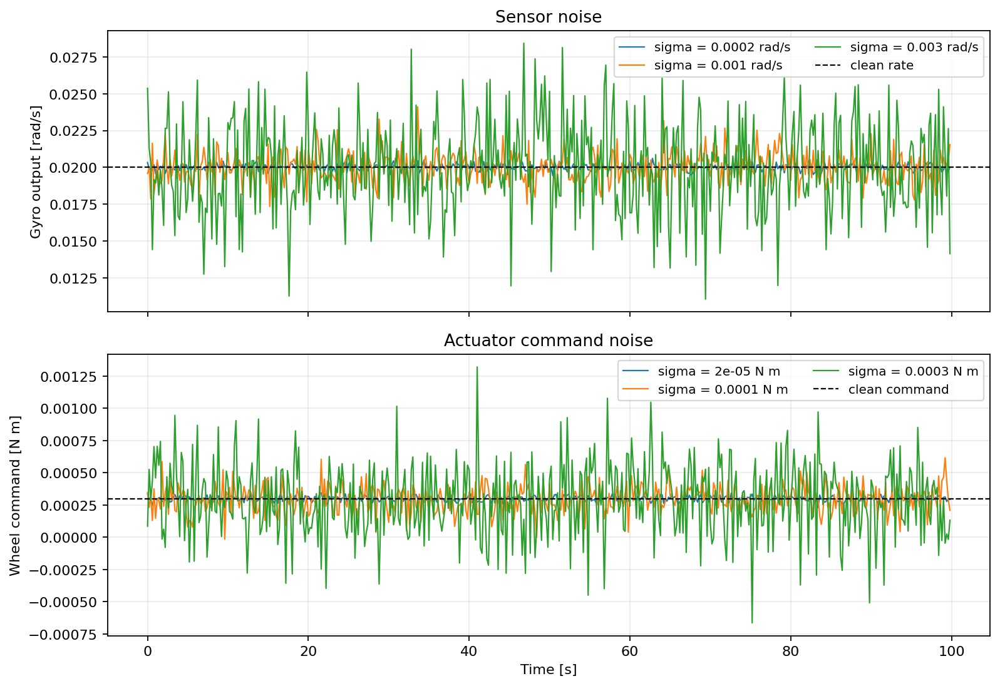

Noise¶
ADCS.Noise adds a Gaussian sample to each sensor reading or actuator
command. std_noise is the per-sample standard deviation \(\sigma\);
bounds optionally clips the sampled value. The plots compare several
values of \(\sigma\) around the same clean signal.


Configure the noise on a sensor or an actuator by passing a Noise object
to its noise argument:
Gyroscope
gyro_noise = ADCS.Noise(std_noise=2e-3) # rad/s
gyro = ADCS.Gyro(axis=np.array([1, 0, 0]), noise=gyro_noise)
Reaction wheel actuator
rw_noise = ADCS.Noise(std_noise=2e-5) # N m
rw = ADCS.RW(
axis=np.array([1, 0, 0]), max_torque=1e-3,
J=5e-6, h=0.0, h_max=0.02, noise=rw_noise,
)
Use a separate Noise object for each unit or sensor family. For vector
readings, std_noise can be a scalar or one value per output component.
The covariance associated with the model is \(R=\sigma^2\) for a scalar,
or a diagonal matrix for component-wise values.